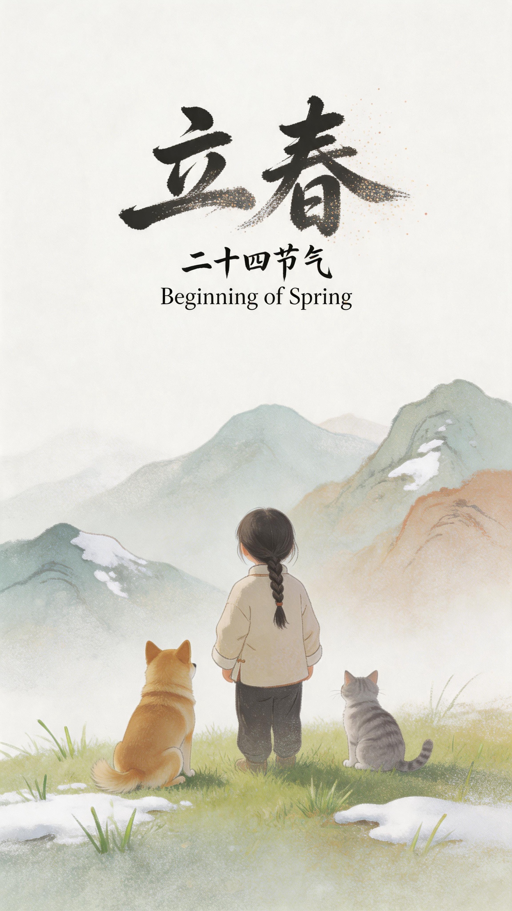

No. 01 / 24

立春Beginning of Spring
立春为二十四节气之首，斗指东北，太阳到达黄经315°，标志着春季的开端与万物的起始。此时东风解冻，蛰虫始振，鱼陟负冰，大地从沉睡中苏醒，草木悄悄萌发新芽。民间素有咬春、打春牛、贴春字、迎春神等丰富习俗，承载着对新一年风调雨顺、五谷丰登的美好期盼。
创作提示词 / PROMPT
艺术海报设计，手写书法大标题"立春"粒子消散字体，署名小字"二十四节气"，三级信息"Beginning of Spring"，中国风山水版画风格，淡水彩，吹墨艺术，富有情绪的叙事画面，一个小女孩牵着狗、抱着猫站在田埂上，远处风筝刚飞起，草芽破土，薄雾中有燕子低飞，二次曝光+蒙太奇式的晕染，肌理呈磨砂质感，朦胧，模糊，涂鸦，粗糙笔刷毛边，粗糙颗粒磨砂玻璃，点彩，岩彩，cloudcore，弥散，梦幻，高级，极简主义风格，大量留白。